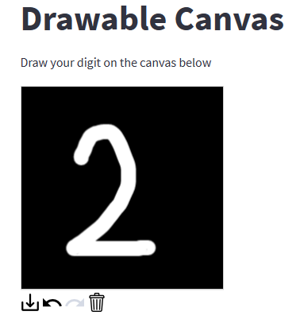

Hello, my name is Bachir and I have recently completed a data science boot-camp. I enjoy problem solving as well as working with others towards a collective goal. I have worked in education as a maths teacher for almost fifteen years which has taught me a wealth of skills that I can bring to data science. I am a good communicator and fluent in English, French and Arabic. I am a proactive, supportive and highly motivated individual. I enjoy learning new skills and look forward to becoming a successful data scientist.

Explored, analysed, preprocessed HELP International Country Dataset leading to an end to end implementation of KMeans machine learning algorithm using Streamlit.
Explored, preprocessed and implemented the logistic regression and decision tree machine learning algorithms on the Mushroom Edibility dataset.

Applied Convolutional Neural Network on the MNIST dataset leading to deploying the model using a Streamlit app.
Data exploration, cleaning, visualition and analysis of USGS dataset.
Explored, preprocessed and implemented a few machine learning algorithms on the dataset related to the details of flights taking off from JFK airport.
Explored, preprocessed and implemented the random forest machine learning algorithm on on the California_Housing_Prices dataset.
Explored, analysed, preprocessed Heart Failure Clinical Records Dataset leading to an end to end implementation of Artificial Neural Network machine learning algorithm using Streamlit.
I enjoyed making these as I was getting familiar with Python. This allowed me to explore different ways of problem solving.
I thoroughly enjoyed the planning and the creative side of designing this exciting adventure game.